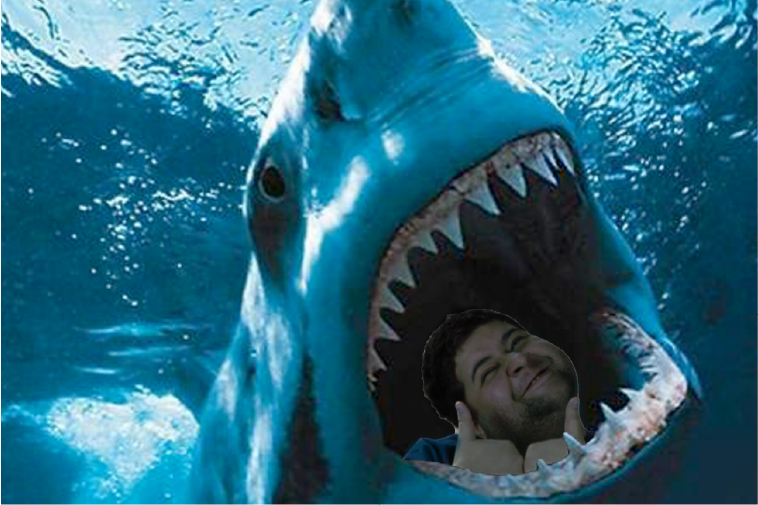

<!DOCTYPE html>
<html lang="en">
<head>
<title>CRF About</title>
<meta charset="utf-8">
<meta name="viewport" content="width=device-width, initial-scale=1">
<link rel="shortcut icon" href="favicon.ico" type="image/x-icon">
<link rel="icon" href="favicon.ico" type="image/x-icon">
<link rel="stylesheet" type="text/css" href="style.css">
</html>
<body>
<div class="sidenav">
  
  <ul>
  <a href="index.html">Home</a>
  <a href="gallery.html">Gallery</a>
  <a href="contact.html">Contact</a>
  <a href="about.html">About</a>
</ul>
</div>

<div class="content">
  <br>
  <h1>Bio</h1>
  
  <p>Born and Raised in Miami Florida, I am but a simple student who wanted more out of life outside of working mundane jobs within the food industry.</p> <br>
  <p>Deciding to continue my education i switched my majors from Literature to Grpahic Design due to my interest in various forms of art and photo editing.</p> <br>
  <p>After a few years of studying in Miami, i would eventually decide a change of location was needed and moved to Orlando to expand my knowledge of graphic design.</p> <br>
  <p>The reason being is that i may one day have a a career that both is able to pay for my needs but leaves me with a sense of satisfaction with the work i do.</p>
  <br>
  <br>
  <br>
  <br>
  <br>
  <br>


</div>


</body>
